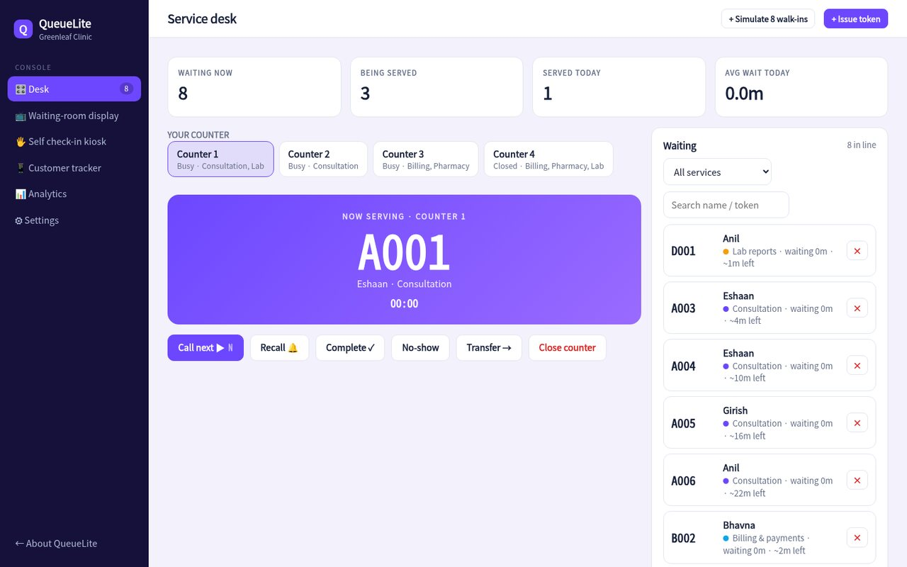
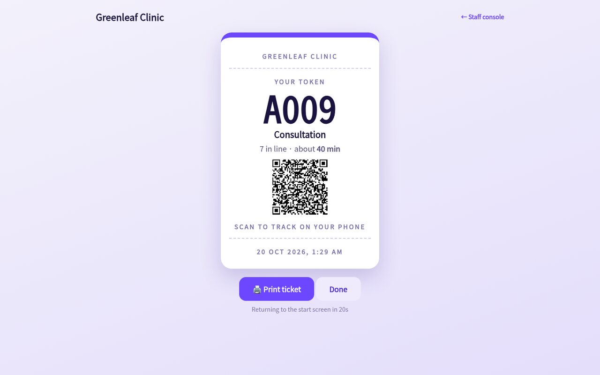
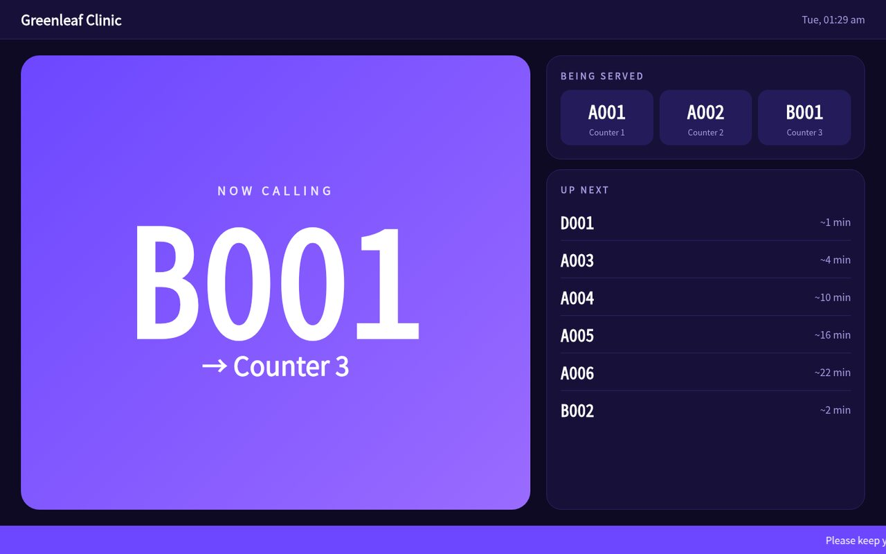
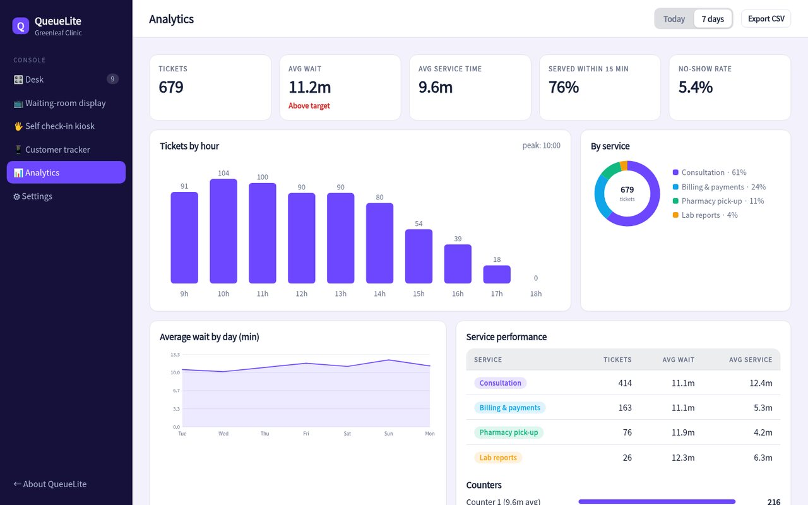

Customers take a token from a kiosk or their phone. Staff call the next person with one key. A big screen announces who's up. Everyone knows how long it will take.

Open the desk, the display and the kiosk on three devices (or three tabs), they stay in sync in real time.
Touch-friendly service picker with a printable ticket, QR code and live wait estimate.
Call next, recall, transfer, mark no-show. Priority tokens for seniors and emergencies jump the line.
Big, readable "now calling" screen with chime, voice announcement and an up-next list.
Customers scan the QR to see their position and wait time, and get an SMS when they're third in line.
Based on service times, open counters and who's ahead, recalculated every time something changes.
Peak hours, average wait, service time per counter, no-show rate and a daily service-level score.
Visitors pick a service on the kiosk and get a ticket with their place in line. They can wait outside, in the car, or at the café next door.

Mount any TV or tablet. The display shows who's being called to which counter, plays a chime and can read the token aloud.

Know your busiest hours, which service is slowest and if you meet your service-level target, then staff accordingly.

Name your services, set average times and choose which counter handles what.
Open the kiosk page on a tablet and the display page on a TV. No installation.
Staff press one button. Customers see the call on the display and on their phone.
*Illustrative target for this concept build.
Sample pricing for this concept build.
No. The kiosk, display and desk are web pages: a tablet, a TV with a browser and a PC are all you need. A receipt printer is optional.
Screens on the same network keep syncing locally in this demo; a production version would queue changes and sync when back online.
Yes, the same token flow works from a link or QR code, so people can queue remotely and arrive when it's nearly their turn.
Yes. Each service has its own prefix, average time and set of counters, and staff can transfer customers between services.
Open the desk, display and kiosk side by side, then call a token and watch the display respond instantly.
Open the live demo